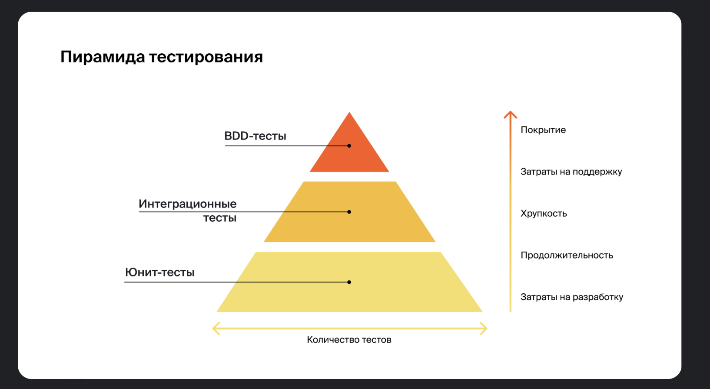
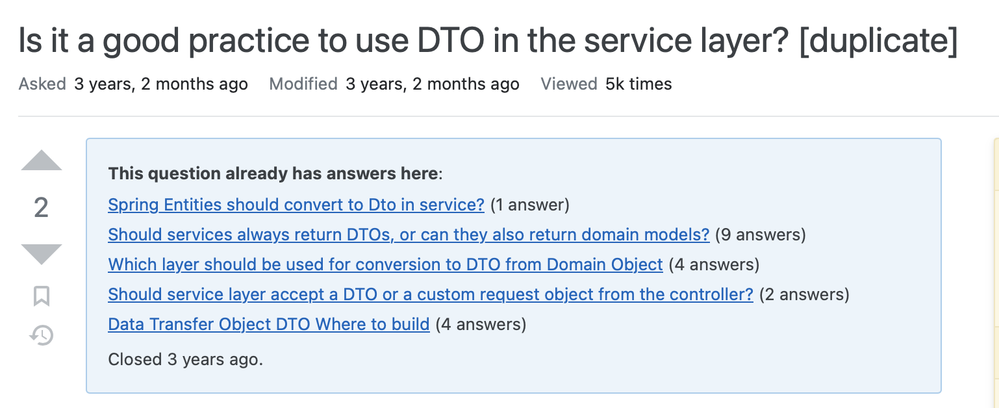
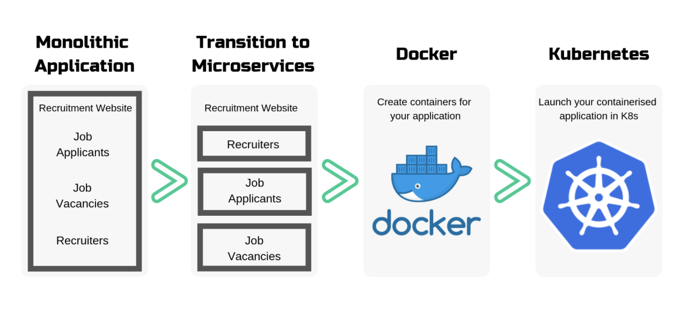

Q&A
Спринт 1

Егор Ерохин
Q&A
Спринт 2
в началоQ&A
Спринт 3
в началоQ&A
Спринт 4
в началоQ&A
Спринт 5
в началоQ&A
Спринт 6
в началоQ&A
Спринт 7
в началоQ&A
Спринт 8
в началоQ&A
Спринт 9
в началоQ&A
Спринт 10
в началоQ&A
Спринт 11
в началоQ&A
Спринт 12
в началоQ&A
Спринт 13
в началоQ&A
Спринт 14
в началоHibernate ORM
- Object–relational mapping
- DTO pattern
- Транзакции
- Репозитории
@Service
public class ServiceTest {
@Transactional
public void test1() {
test2();
}
@Transactional(propagation = Propagation.REQUIRES_NEW)
public void test2() {
}
｝
Можно ли сделать запросный метод для выражения?
((A and B) or (C and D)) and E
ACID
- Atomicity — атомарность
- Consistency — согласованность
- Isolation — изоляция
- Durability — устойчивость
Проблема N+1
“The Hibernate recommendation is to statically mark all associations lazy and to use dynamic fetching strategies for eagerness. This is unfortunately at odds with the JPA specification which defines that all one-to-one and many-to-one associations should be eagerly fetched by default. Hibernate, as a JPA provider, honors that default. ”
Double brace initialisation
ФП14 ShareIt bookings
- Добавить PostgreSQL
- Переход на JPA
- Booking — функция бронирования
- Даты бронирования
- Отзывы
Ваши вопросы
- ORM
- DTO pattern
- Транзакции
- Репозитории
- ACID
- N+1
- Double brace
- ФП14
Q&A
Спринт 15
Егор Ерохин
Mock и Int тестирование
Где маппить DTO в Entity — в контроллерах или в сервисах?


Контейнеры и оркестрация K8s
ФП15 ShareIt item requests
- Запросы на добавление вещей
- Ответ на запрос вещи
- Пагинация через Pageable
- Тестирование
Ваши вопросы
- Mock тестирование
- Маппинг объектов
- Контейнеры
- Оркестрация
- ФП15